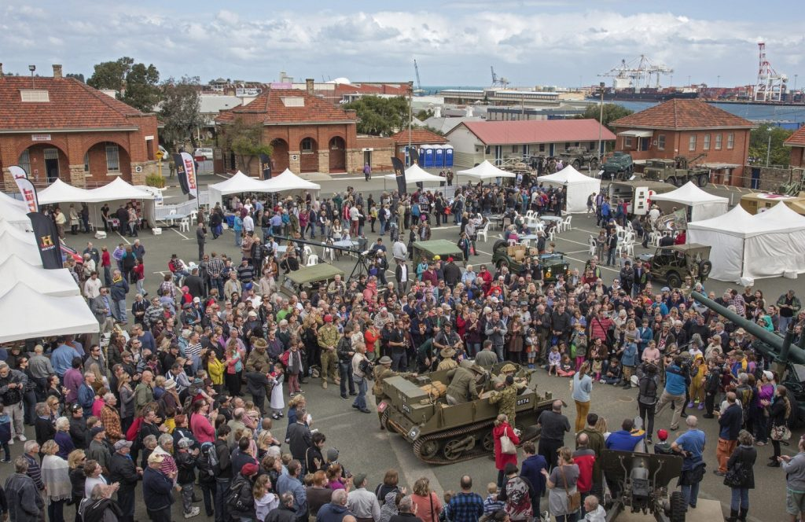
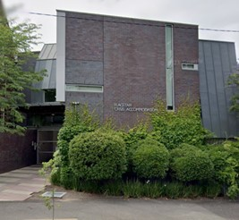
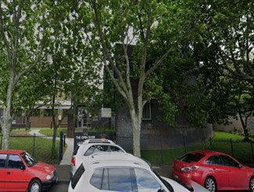
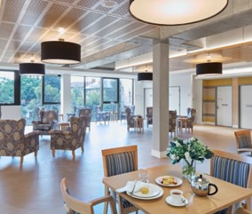
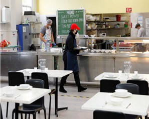
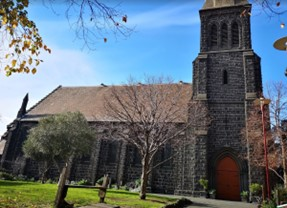
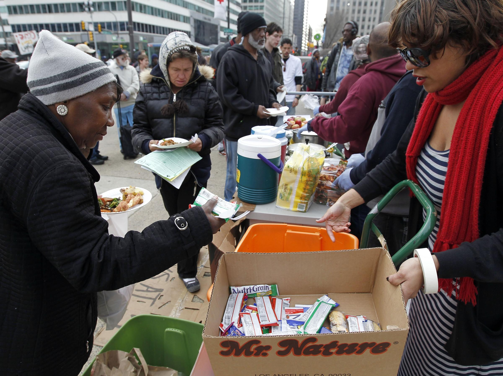
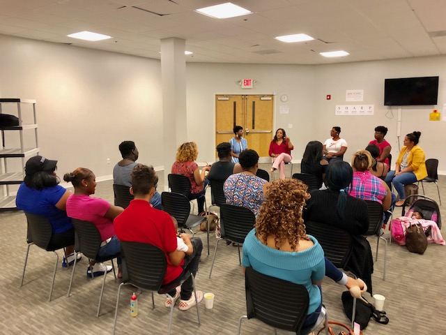

Services
At Support the Homeless, we offer a range of services to help individuals and families in need. Here are three of our primary services:
City Tours
Currently, there are services that are available in the City Of Melbourne, providing support for those experiencing hardship.
The Salvation Army The Salvation Army is one of Australia’s biggest organisations, offering assistance to families and children. They are located in several parts of Melbourne, making them accessible to everyone. The organisation offers a variety of services including different housing options such as social housing to support low income earners who cannot afford to purchase a house, crisis accommodation for individuals who currently don’t have a home. Additionally, they offer vital services such as distribution of food to the community, financial assistance and counselling ( the salvation army housing, n.d.).
City Tours
Location: Flagstaff (Crisis Accommodation)
Location: North Melbourne, (Shelter)
Currently, there are services that are available in the City Of Melbourne, providing support for those experiencing hardship.
The Salvation Army The Salvation Army is one of Australia’s biggest organisations, offering assistance to families and children. They are located in several parts of Melbourne, making them accessible to everyone. The organisation offers a variety of services including different housing options such as social housing to support low income earners who cannot afford to purchase a house, crisis accommodation for individuals who currently don’t have a home. Additionally, they offer vital services such as distribution of food to the community, financial assistance and counselling ( the salvation army housing, n.d.).
Sacred Heart Community:
Sacred Heart Community is a non-profit organisation that aims to support people experiencing homelessness by offering free meals and housing programs for people seeking accommodation. There are various Op shops located around Melbourne that the organisation established to sell reasonably priced goods to the community (Sacred Heart Mission, n.d.).
 Location : St kilda ( community kitchen)
Currently, there are services that are available in the City Of Melbourne, providing support for those experiencing hardship.
The Salvation Army The Salvation Army is one of Australia’s biggest organisations, offering assistance to families and children. They are located in several parts of Melbourne, making them accessible to everyone. The organisation offers a variety of services including different housing options such as social housing to support low income earners who cannot afford to purchase a house, crisis accommodation for individuals who currently don’t have a home. Additionally, they offer vital services such as distribution of food to the community, financial assistance and counselling ( the salvation army housing, n.d.).
St Mark’s Community Centre:
St Marks provide a warm and secure environment for people to gather, they offer a setting where people can establish connections through playing games. Services that they provide include the provision of food including pet food, shower room, therapy and more. Their objective is to cultivate a feeling of community by giving people the chance to participate in significant conversations and obtain necessary resources (Anglicare Victoria, n.d.). Currently, the community centre is working in partnership with Anglicare, Anglicare provides a safe environment where individuals who are facing homelessness or who may become homeless to seek assistance and giving them the opportunity to live a more comfortable lifestyle through the provision of accommodation and more.
Location : Fitzroy
Support services:
Virtual Assistance Centre:
At Rescue Army we recognise that there are moments when you require emergency support, our Virtual Assistance Centre is here to assist you whether your needs are informational, supportive or you just need someone to talk to. Online Chat: this online service offers a quick counselling session from trained experts, it’s a safe space where you can simply talk to our staff and ask for advice regarding your mental health and if you are feeling anxious. Our team will ensure that you receive the resources and tools required to effectively manage your mental well-being, advising you to seek additional help from other specialists when needed. Our service is open 24/7 so don’t hesitate to ask for help.
Spiritual Support:
Support groups create a community where individuals share their experiences. It opens an opportunity to share your own stories, these groups aim to create a safe space where members can interact with each other, establishing a sense of connection and shared experiences. These groups aim to bring comfort and clarity to the members as they share common experiences Support groups can be scary for some but it is a great way to make new connections with people you share common stories with! The support group will be held every Friday and 6PM at Melbourne CBD Meals will be provided and there will be fun interactive games to play.
Financial Help :
Food insecurity is defined as having insufficient access to adequate amounts of food that is healthy and nourishing. Various people of different socioeconomic backgrounds suffer from food insecurity, however, the population group that tends to suffer the most are the homeless Parpouchi et al. (2016). To help those who are experiencing food insecurity, making simple food donations to large organisations such as food banks can go a long way and help those who are struggling financially.
Social
Our food distribution program ensures that those in need have access to nutritious meals. We partner with local food banks and organizations to gather food donations and distribute them to the homeless community.
Spiritual
We believe in empowering individuals through job training and placement programs. Our team works with local businesses to create job opportunities and provide the necessary training to help individuals secure stable employment.
Financial
We believe in empowering individuals through job training and placement programs. Our team works with local businesses to create job opportunities and provide the necessary training to help individuals secure stable employment.